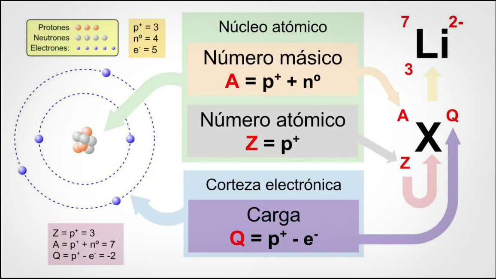

El átomo
1 ¿Qué es un átomo?
Los átomos son los ladrillos que constituyen toda la materia que nos rodea: el suelo, el aire y todos los gases, el agua y todos los líquidos, la comida, los elementos químicos o nuestro propio cuerpo. Todo lo que nos rodea e incluso nosotros mismos estamos formado por átomos.
El átomo es la unidad más pequeña de la materia que conserva las propiedades de un elemento. Todos los átomos que conoce el ser humano están ordenados en la Tabla periódica.
Los átomos son extremadamente pequeños (escala nanométrica, entre \(0,1·10^{-9}m\) y \(0,5·10^{-9}m\)): no pueden verse a simple vista y tampoco con un microscopio óptico.
Los átomos solo se pueden ver con unos microscopios especiales llamados: Microscopio de Efecto Túnel (STM), Microscopio de Fuerza Atómica (AFM), Microscopio Electrónico de Transmisión (TEM/STEM) de alta resolución.
2 Dibujo del átomo y partículas subatómicas
Aquí enseñamos un modelo de átomo basado en el modelo que propuso Bohr. Decimos que es un modelo porque el átomo en realidad es bastante más extraño. Según este modelo el átomo lo podemos dibujar así:
Es importante saber dibujar un átomo y situar el núcleo y la corteza, y colocar protones, neutrones y electrones en su sitio con su carga.
{kind=link}
Los átomos están formados por tres partículas principales:
| Partícula | Símbolo en apuntes | Carga eléctrica | Masa (aprox.) | Ubicación |
|---|---|---|---|---|
| Protón | \(p^+\) | +1 | 1 | Núcleo |
| Neutrón | \(n\) | 0 | 1 | Núcleo |
| Electrón | \(e^-\) | -1 | ~0 | Giran alrededor del núcleo en la corteza. |
- Los protones y neutrones están en el núcleo.
- Los electrones giran alrededor del núcleo en orbitales como si fueran planetas girando en torno al Sol.
- Los neutrones y protones son mucho más pesados que los electrones. Por eso al calcular la masa solo sumaremos a los protones y a los neutrones.
3 Números muy importantes
Número atómico (Z)
El número atómico (Z) es el número de protones en un átomo.
- Define el elemento.
- Ejemplo: El hidrógeno tiene Z = 1. Esto se ve en la tabla periódica.
\[
Z = n^{\circ} \ p^+
\] Donde \(n^{\circ} \ p^+\) = número de protones.
Número másico (A)
El número másico (A) es la suma del número de protones y neutrones. Nos dice la masa de un átomo concreto (recordad que los electrones son tan ligeros que los ignoramos para la masa).
\[ A = Z + nº\ n \]
Donde:
- Z = número de protones.
- \(nº\ n\) = número de neutrones.
Carga eléctrica (Q)
Para calcular la carga eléctrica solo hay que restar el número de electrones del número de protones.
\[ Q = nº\ p^+\ +\ nº\ e^- \] Si Q es 0, diremos que el átomo es neutro, que es lo mismo que decir que no tiene carga. Si Q es positivo, la carga del átomo será positiva. Si Q es negativo, la carga del átomo será negativa.
Vídeo donde se explica la carga eléctrica
Resumen números importantes:
1. Número atómico: \(Z = nº\ p^+\)
2. Número másico: \(A = Z + nº\ n\)
3. Carga eléctrica: \(Q = nº\ p^+ + nº\ e^-\)
Con estos números solemos identificar un átomo de forma muy resumida así:

]4 Isótopos
Los isótopos son átomos del mismo elemento con:
- Mismo número de protones (Z)
- Diferente número de neutrones (\(nº\ n\))
Un ejemplo pueden ser los isótopos del carbono: Carbono-12 y Carbono-14. Se escriben así: elemento-A.
Ejemplo de los isótopos del Hidrógeno:
{kind=link}
5 Iones
Los iones son átomos que sí tienen carga eléctrica, es decir que el número de protones es distinto que el de el ectrones. Vamos por partes:
- Un átomo neutro es el átomo habitual. Significa que su carga eléctrica es cero. Esto sucede cuando tenemos el mismo número de protones (\(p^+\)) y de electrones (\(e^-\)). Cada carga eléctrica positiva de un protón se compensa con una carga negativa de un electrón y hace que la carga total sea cero.
- Un átomo que sí tiene carga eléctrica (es decir: \(Q \neq 0\)) recibe el nombre de Ion. Recuerda que esto ocurre cuando: protones \(\neq\) electrones
Tipos de iones:
- Catión: pierde electrones \(\rightarrow\) carga positiva (Q>0).
- Anión: gana electrones \(\rightarrow\) carga negativa (Q<0).
6 Relación con la tabla periódica
- La tabla periódica está ordenada por número atómico (Z).
- Cada elemento tiene un Z único.
- Los elementos del mismo grupo tienen propiedades similares.
7 Resumen
- Los átomos están formados por protones (+) y neutrones en núcleo y electrones (-) en la corteza.
- Z = número de protones.
- A = protones + neutrones.
- Q = protones - electrones. Los iones tienen carga:
- Catión: atómo con Q > 0
- Anión: atómo con Q < 0
- Los isótopos difieren en el número de neutrones.
8 ¿Qué me tengo que saber para el examen?
- Saber dibujar el átomo y colocar bien sus partes (núcleo y corteza) y colocar las partículas subatómicas donde tienen que ir (protones, neutrones en el núcleo y electrones en la corteza).
- Conocer las fórmulas o ecuaciones que relacionan \(Z\), \(A\) y \(Q\) con \(p^+\), \(e^-\) y \(n\).
- Conocer la nomenclatura: \(\ce{^{A}_{Z}X^{Q}}\) y saber calcular todos los números.
- Conocer los elementos más importantes de la tabla periódica, tanto su símbolo como su nombre y saber situarlos en su sitio.
- Conocer la definición y entender qué son isótopos e iones (tanto cationes como aniones). Y en este contexto entender qué pasa si a un átomo se le cambian los protones, los neutrones o los electrones.
9 Ejercicios
9.1 Completa la siguiente tabla:
| Elemento | Z | A | Protones | Neutrones | Electrones |
|---|---|---|---|---|---|
| X | 8 | 16 | ? | ? | ? |
| Y | ? | 23 | 11 | ? | 11 |
| Z | 17 | ? | ? | 18 | ? |
Sobre la tabla anterior: 1. Calcula los valores que faltan. 2. Indica si el átomo es neutro o un ion. 3. Si es un ion, indica su carga.
9.2 Pregunta de desafío
Un átomo tiene: - 12 protones - 12 neutrones - 10 electrones
Responde:
- ¿Cuál es Z?
- ¿Cuál es A?
- ¿Es un ion?
- ¿Cuál es su carga?